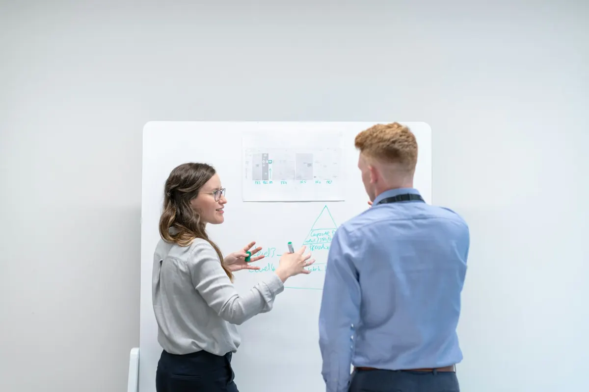

Manifattura
Processi produttivi, pianificazione e sistemi ERP nelle PMI.
Consulenza strategica e operativa
Affianco le PMI della manifattura, della logistica e della distribuzione nell'analisi di margini, processi, contabilità e supply chain: dalla diagnosi agli strumenti operativi.
Le questioni
Nella mia esperienza, le opportunità più grandi si nascondono dietro domande semplici a cui nessuno, in azienda, ha una risposta basata sui dati.
Per cliente, mercato, prodotto o tratta. E quali attività poco redditizie hanno comunque un valore strategico.
Controlli manuali su fornitori e vettori fanno emergere gli errori quando sono già diventati costi.
Pallet, attrezzature e materiali presso terzi, senza una visione d'insieme aggiornata.
Quando ogni reparto lavora sul proprio file Excel, il gestionale smette di essere un riferimento.
Missione
«Rendere visibile ciò che conta, perché ogni scelta di business sia una scelta consapevole.»
Anche mantenere un'attività a basso margine può essere la scelta giusta, a patto di sapere perché.
Ambiti di intervento
Un unico interlocutore che collega le scelte di business ai processi e ai dati che le rendono misurabili.
Lettura della base dati per mercati, clienti e tratte: punti di forza, aree di perdita, potenziale di crescita.
Dashboard, verifica delle fatture, tracciamento degli asset: strumenti su misura che riducono il lavoro manuale.
Individuazione e riduzione dei muda (attese, movimentazioni, rilavorazioni) per ridurre i costi e migliorare il servizio.
Analisi delle dipendenze e dei punti di fragilità della catena di fornitura, per renderla più solida.
Struttura del piano dei conti e dei centri di costo, cespiti e ammortamenti, reporting per la direzione e il CdA.
Analisi dei requisiti, struttura dei dati e migrazione da un gestionale all'altro, con cautela e precisione.
Settori
Conosco i processi, il linguaggio e i vincoli di chi produce, trasporta e distribuisce.
Processi produttivi, pianificazione e sistemi ERP nelle PMI.
Trasporti, tariffe, marginalità per tratta e gestione degli asset.
Flussi di merce, magazzino e relazione con i fornitori.

Approccio
Il lavoro comincia sul posto: incontrare le persone e osservare i processi dove avvengono.
Obiettivi, strategia, dove si guadagna e dove si perde, e perché le cose funzionano come funzionano.
I dati del gestionale diventano una base condivisa e affidabile per le decisioni.
Automazioni, processi più snelli e indicatori per verificare i risultati nel tempo.
Esperienze selezionate
Alcuni interventi realizzati in logistica internazionale e in amministrazione.
Nessuno strumento per verificare le fatture di noleggio prima del pagamento.
Modello Excel/VBA con aggiornamento dei dati, stima mensile e correzione sul mese precedente.
Ogni fattura confrontata con il valore atteso in pochi minuti.
Asset aziendali affidati ai trasportatori, senza sapere quanti fossero fuori e presso chi.
Strumento di registrazione delle uscite e dei rientri, con stato aggiornato per vettore.
Visibilità completa sugli asset e sui rientri mancanti.
Necessità di capire su quali mercati concentrarsi e quali costi giustificare.
Analisi dell'intera base dati: volumi, marginalità, punti di forza e di debolezza per mercato.
Scelte strategiche motivate, incluse le tratte a basso margine che sostengono servizi più redditizi.
Una nuova società da strutturare da zero, con un cambio di gestionale in corso.
Ciclo contabile completo (paghe, compensi agli amministratori, cespiti e ammortamenti, rapporti con le banche), struttura dei centri di costo, reporting all'AD e al CdA, migrazione dei dati da Microsoft Dynamics a Sage X3.
Una struttura contabile che rende i costi leggibili e misurabili fin dal primo giorno.
Profilo
Business Analyst e consulente, con una formazione da ingegnere e un'esperienza che va dalla logistica internazionale alla contabilità di una nuova società, fino ai progetti ERP nella manifattura. Unisco la lettura dei numeri alla conoscenza dei processi e dei sistemi che li generano.
Raccontami la tua azienda e le domande a cui oggi non trovi risposta. Partiamo da lì.